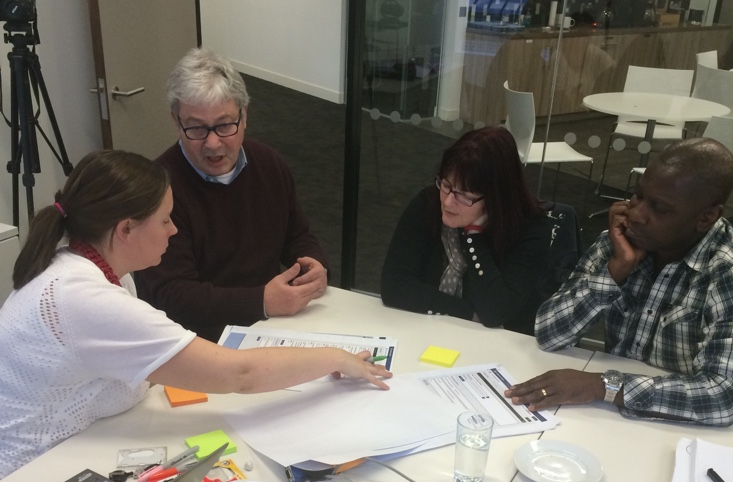
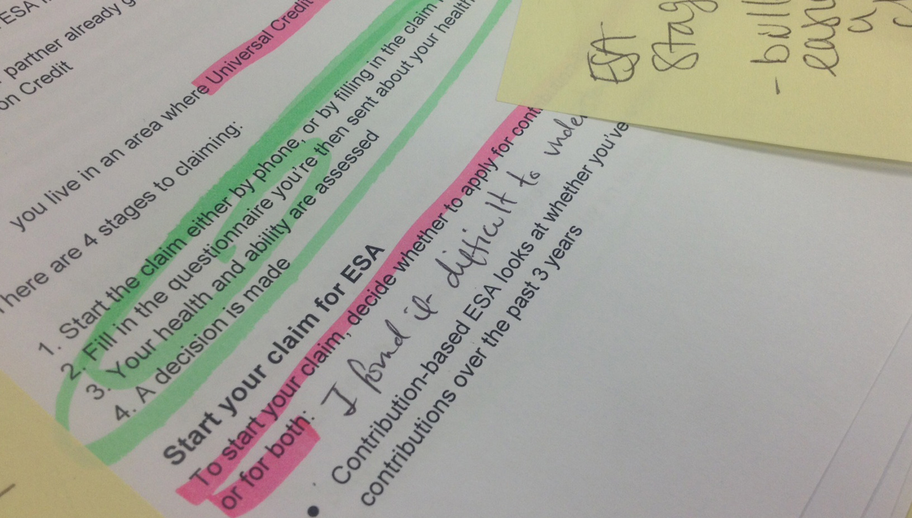
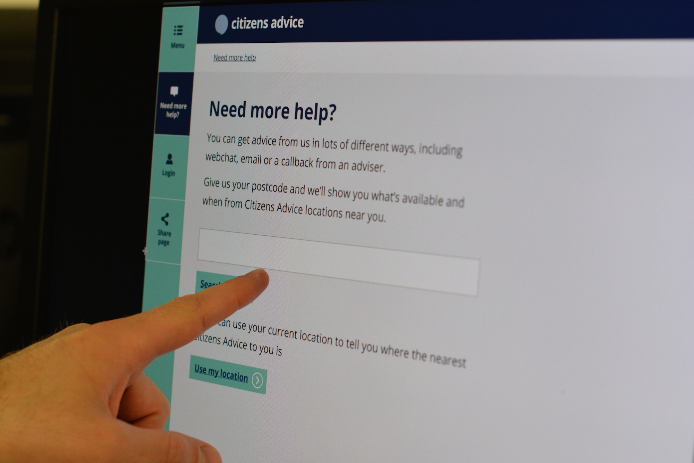

When the evidence is against you
Publish and be damned? Not when the evidence says no.
When the workplace rights team began writing new content about pay, our research showed the first thing most advisers did was check someone’s employment status.
Employment what?
Turns out, most people don’t know what employment status is. As we learned over and over during testing.
How to run a spike
Carole Ray on June 10, 2016 in Content
What’s a ‘spike’, you ask?
Very good question! And one we asked as well, when Simon, our Content Lead, asked us to do one.
A spike (as it turns out) is intensive time-limited work looking at resolving a particular problem or issue.
The way we write
Alec Johnson on May 20, 2016 in Design, Content
They say writing is a solitary activity. Whoever ‘they’ are.
Sometimes it is. There are plenty of lonesome desks where people tap away in isolation.
Benefit checker, our first review
Eliot Hill on May 12, 2016 in Design, Content
The benefits system is confusing. There’s a lot of information out there so it can be hard for people to know where to start. Add to that the stressful situations people are often in when they need to claim benefits and it creates a perfect storm.
Casebook on tour
Cat Togher on May 6, 2016 in Case management, Casebook, Research, Testing
Peanuts are not nuts*. Welsh cakes don’t dip well in tea. Paddington station is very confusing. Ambulance response time in Peterborough can be up to 20 mins.